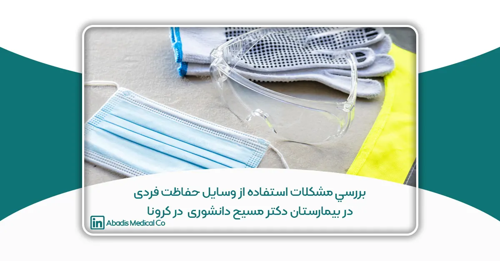

این مقاله برای یازدهمین کنگره کنترل عفونت نوشته و ارسال شده است.
چكيده
مقدمه
در زمان طغيان بيمارى كوويد۱۹، پرسنل درماني خط مقدم مي بايست از وسايل حفاظتی فردى براى طولانی مدت استفاده نمايند كه موجب بروز مشكلات متعددى براى ايشان گرديدند. اين مطالعه نيز با هدف ”بررسی مشكلات مرتبط با استفاده از وسايل حفاظت فردى در كادر درمانی و نقش آن در اختلال عملكرد مراقبتی درمانی و استفاده نامناسب از وسايل حفاظت فردى پرسنل ” انجام گرديد.
روش كار
در اين مطالعه مقطعی تحليلی اطلاعات دموگرافيک،مدت زمان استفاده از وسايل حفاظت فردى و آسيب هاى پوستی،سردرد،مشكلات حركتی،استرس گرما،آسيبهاى چشمی ناشی از آنها در پرسنل پرستارى خط مقدم با استفاده از يک پرسشنامه محقق ساخته جمع آورى شدند. در ضمن تاثير مشكلات مرتبط با استفاده از وسايل حفاظت فردى بر توانايی انجام كار و استفاده نامناسب و غيرصحيح از وسايل حفاظت فردى نيز بررسی شدند.
نتايج: ١٩٨ پرسنل پرستارى خط مقدم پر سشنامه را تكميل نموده و اكثر آنها از ماسک N95/FFP3 ، ماسك هاى 3M با فيلتر P100، عينک يا شيلد،گان هاى يكسره (COVERALL) و دستكش استفاده نموده بودند. آسيب هاى پوستی ناشی از ماسک N95/FFP3 و عوارض استرس گرما در اثر استفاده از گان يكسره نيز بعنوان شايعترين مشكلات،گزارش شدند. ۸۸.۶٪ از شركت كنندگان اظهار نمودند كه مشكلات ناشی از استفاده وسايل حفاظت فردى بخصوص عوارض استرس گرما(۶۷.۹٪) و سردرد (۵۸.۹٪) بر توانايی و انجام كار آنها تاثير داشته و ۵۱.۱٪ بيان كردند كه اين مشكلات بخصوص عوارض استرس گرما موجب استفاده نامناسب و غير صحيح آنها از وسايل حفاظت فردى شده است.
نتيجه گيرى
شيوع آسيبهاى ناشی از پوشيدن وسايل حفاظت فردى در پرسنل درمانی خط مقدم بخصوص با افزايش زمان استفاده از آنها،خيلی بالا می باشد و بر سلامت و تندرستی پرسنل درمانی، ايمنی و بهره ورى محل كار و در نهايت رضايت شغلی تاثير عمده اى می گذارد. با استفاده از يافتههاى مطالعات انجام شده و طراحی مناسب وسايل حفاظت فردى، كاهش زمان استفاده از آنها، فراهم نمودن محيط كارى خنک و مناسب،می توان ناراحتی و آسيبهاى ناشی از آنها را كه موجب اختلال در توانايی انجام كار،ايمنی و سلامتی پرسنل درمانی می شوند،را كاهش داد.
كليد واژه ها: وسايل حفاظت فردى، آسيب ها، كوويد١٩، پرسنل درمانی
بيان مساله
٣١ ماه دسامبر ٢٠١٩ ميلادى، خوشهاى از موارد عفونت شديد تنفسي در شهر ووهان (Wuhan) استان هوباى، كشور چين گزارش شد. در ١١ ژانويه ٢٠٢٠ اولين مورد فوت ناشی از اين ويروس در چين گزارش گرديد و درگيرى ميليونها نفر در ۱۲۰ كشور در سرتاسر دنيا و انتقال فرد به فرد به كادر درمانی نيز شرايط را پيچيدهتر نموده است.
حاصل اين همه گيرى بزرگ،پر شدن تختهاى بيمارستانی،خستگی مفرط تيمهاى درمانی،كمبود شديد وسايل حفاظت فردى،ابتلا كاركنان بيمارستان، كمبود نيروى انسانی و گسترش بيمارى و نگرانی در شهرهاى مختلف چين و برخی كشورهاى جهان بوده است.
برطبق گزارشات وزرات بهداشت چين، ٣٣٠٠ نفر از پرسنل درمانی از اوايل مارس به كوويد۱۹ مبتلا شده و ٢٢ نفر فوت نمودند.
در ايتاليا نيز ۲۰٪ از پرسنل مبتلا شده و يكسرى نيز فوت شدند. همين موضوع اهميت حفاظت از پرسنل درمانی را نشان می دهد.
يكي از روش هاى مهم براى حفاظت از پرسنل درمانی،كنترل و پيشگيرى از مواجهه پرسنل با عفونتهاى شغلی است.اقدامات كنترلی عبارتند از اقدامات مهندسی،اقدامات مديريتی و استفاده از وسايل حفاظت فردى.
وسايل حفاظت فردى نقش مهمی در بهداشت عمومی ايفا نموده و پرسنل را از مواجهه شغلی با عوامل عفونی محافظت می كنند.
خطر ابتلا پرسنل درمانی به بيمارىهاى عفونی در حين مراقبت از بيمار را كاهش داده و مانع انتشار و سرايت بيشتر بيمارى میشوند.
بهدنبال تشديد طغيان كوويد١٩، پرسنل درمانی مراقبت كننده از بيماران مبتلا يا مشكوک به كوويد ۱۹ می بايست علاوه بر رعايت احتياطات استاندارد از وسايل حفاظتی از جمله ماسک يا رسپيراتور،گان،دستكش و محافظ چشم و صورت استفاده نمايند.
وسايل حفاظت فردى زمانی اثربخش است كه در سايز مناسب،با كيفيت مناسب،در دسترس كادر بهداشتی درمانی باشد و كاركنان براى استفاده صحيح از آنها آموزش كافی ديده و تمرين كرده باشند، و از ساير رفتارهاى بهداشتی ديگر نيز در محيط كار تبعيت نمايند.
همچنين پوشيدن وسايل حفاظت فردى مي توانند مشكلاتی را براى پرسنل به همراه داشته باشند.غالبا استفاده از انها سخت و دشوار است بخصوص زمانی كه اين وسايل به مدت طولانی و در طی طغيانهاى بيمارىهاى عفونی نوپديد استفاده شوند.
وسايل حفاظت فردى علاوه بر ايجاد استرس برروى بدن،مانع حركت و راحتی پرسنل شده و موجب ليز خوردن،سقوط،فشار بيش از حد میشوند. در ضمن ممكن است با پوشيدن چند لايه دستكش،كارهاى مهارتی آنها محدود شود و يا در اثر انعكاس و شكست نور ناشی از محافظهاى صورت دچار خستگی چشم شوند.
مطالعات نشان دادهاند كه پوشيدن وسايل حفاظت فردى به مدت طولانی و در شرايط كارى استرس زا علاوه بر ايجاد استرس گرما موجب افزايش ميزان خطاها شده و می تواند بر توانايی انجام كار و راحتی پرسنل تاثير داشته باشد.
در يک مطالعه ديگر كه بر روى پرستاران شاغل در بخش مراقبت ويژه انجام شده ،مشخص گرديد كه درد و ناراحتی (سردرد، درد ناحيه صورت ، احساس ناراحتي در لاله گوش) ناشی از ماسک هاى N95 موجب عدم تحمل شده و يكی از علل اصلی استفاده ناصحيح از ماسک هاى N95 بوده است. همچنين آسيبهاى پوستی مرتبط با اقدامات حفاظتی موجب كاهش اشتياق براى انجام كار و افزايش اضطراب می شود.
با توجه به شيوع بيمارى كوويد١٩ در كشور ايران و قرارگرفتن بيمارستان دكتر مسيح دانشورى به عنوان اولين مركز ريفرال پذيرش بيماران مبتلا و مشكوک در پايتخت و عدم تجربه كافي كادر درمان در نحوه استفاده از وسايل حفاظت فردى در مقابل اين بيمارى و ايجاد مشكلاتی براى آنان، اين مطالعه با هدف ”بررسی مشكلات مرتبط با استفاده از وسايل حفاظت فردى در كادر درمانی و نقش آن در اختلال عملكرد مراقبتی درمانی و استفاده نامناسب از وسايل حفاظت فردى پرسنل ” انجام گرديد.
روش كار
اين مطالعه مقطعی تحليلی از ارديبهشت تا شهريور ماه سال ١٣٩٩ انجام گرديد. در اين پژوهش براى جمعآورى اطلاعات از پرسشنامه محقق ساخته شامل ٣٣ سوال استفاده گرديد كه ٣١ سوال مربوط به مشخصات دموگرافيک ،٣ سوال مربوط به وسايل حفاظت فردى و مدت زمان مورد استفاده از آنها ،١٠ سوال مربوط به آسيب هاى پوستی،سردرد،مشكلات حركتی،استرس گرما،آسيب هاى چشمی ناشی از استفاده وسايل حفاظت فردى،۴ سوال مربوط به تاثير مشكلات بر توانایی انجام كار و استفاده نامناسب و غيرصحيح از وسايل حفاظت فردى و ٣ سوال مربوط به گذراندن دوره هاى آموزشی نحوه استفاده از وسايل حفاظت فردى و بيمارى كوويد ۱۹ می باشد.
براى روايی محتواى پرسشنامه از نظر متخصصين استفاده شد. پايايی آن نيز با استفاده از آلفا كرونباخ ۹۰ درصد بود. نمونهگيرى به روش در دسترس از ميان كادر پرستارى مركز از جمله پرستاران،كمک پرستاران،كارشناسان اتاق عمل و بيهوشی و در بخشهاى مختلف شامل اورژانس،بخشهاى مراقبت ويژه و داخلی انجام و ١٩٨ نفر در اين مطالعه شركت نمودند.
جهت تجزيه و تحليل نيز از نرم افزارهاى SPSS 23 استفاده گرديد. به منظور بررسی فرض نرماليتی دادهها،آزمونهاى كولموگروف،اسميرنوف و شاپيرو بكاربرده شد. توصيف متغيرهاى كمی با استفاده از شاخص ميانگين و انحراف معيار و توصيف متغيرهاى كيفی با استفاده از درصد و تعداد، گزارش شدند. براى مقايسه ميانگين فاكتورهاى كمی در دو گروه مستقل از آزمون T-test و براى مقايسه ميانه فاكتورهاى كمی در دو گروه مستقل از آزمون من- ويتنی استفاده شد.
فرض استقلال بين متغيرهاى كيفی دو حالته با استفاده از آزمون كاى- دو، دقيق فيشر مورد بررسی قرار گرفت. تمام آزمون ها در سطح معنی دارى ۰.۰۵ انجام شدند.
نتايج
مشخصات دموگرافيک ۱۹۸ نفر جمعيت مورد مطالعه در جدول شماره يک خلاصه شده اند:
|
درصد |
فراوانی |
مشخصات دموگرافيک |
|
|
۳۸.۱٪ |
۷۴ |
مرد |
جنس |
|
۶۱.۹٪ |
١٢٠ |
زن |
|
|
۵.۶٪ |
١١ | كارشناس ارشد |
تحصيلات |
|
۶۵.۵٪ |
١٢٩ |
كارشناسی |
|
|
۴.۶٪ |
٩ |
كاردانی |
|
| ۲۴.۴٪ | ۴۸ |
ديپلم |
|
|
۵۷.۴٪ |
١١٢ | داخلی ريه |
نوع بخش |
|
۳۹.۵٪ |
٧٧ |
مراقبتهاى ويژه |
|
| ۳.۱٪ | ۶ |
اورژانس |
|
|
۶۴.۶٪ |
١٢٨ |
پرستار |
شغل |
| ۳۱.۸٪ | ۶۳ |
كمك پرستار |
|
|
۳٪ |
۶ |
تكنسين بيهوشی |
|
|
۰.۵٪ |
١ |
تكنسين اتاق عمل |
|
|
۳۴.۳٪ |
۶۸ |
مجرد |
وضعيت تاهل |
| ۶۳.۶٪ | ۱۲۶ |
متاهل |
|
|
۲٪ |
۴ |
مطلقه |
|
|
۵۴.۵٪ |
١٠٨ | صبح |
شيفت كارى |
|
۴۵.۵٪ |
۹۰ |
عصر و شب |
وسايل حفاظت فردى مورد استفاده در مركز ما در زمان مطالعه شامل ماسک N95/FFP3 ،ماسک هاى 3M با فيلتر P100،عينک يا شيلد،گانهاى يكسره (COVERALL) و دستكش بود .ميزان استفاده از وسايل حفاظت فردى توسط شركت كنندگان در جدول شماره ٢ توضيح داده شده است:
|
درصد |
فراوانی | نوع وسايل حفاظت فردى |
|
۶۷.۷٪ |
١٣٠ |
ماسک N95/FFP3 |
|
۶۸.۹٪ |
۱۳۵ |
ماسک 3M |
|
۹۲.۹٪ |
۱۸۳ |
عينک/ شيلد صورت |
|
۹۱.۹٪ |
۱۸۱ |
گان يكسره |
| ۸۹.۲٪ | ۱۷۴ |
دستكش معاينه |
شركت كنندگان به طور متوسط ۱۸.۵ ( ۶-۳۰ +_ ۷.۲) روز از وسايل حفاظت فردى استفاده كرده بودند.
مشكلات مرتبط با استفاده از وسايل حفاظت فردى نيز به پنج گروه آسيب هاى پوستی،سردرد،مشكلات حركتی،عوارض استرس گرما و آسيبهاى چشمی تقسيم شدند. بيشترين آسيبهاى گزارش شده به ترتيب عبارت بودند از آسيبهاى پوستی و عوارض استرس گرما.
|
درصد |
فراوانی |
مشكلات مرتبط با استفاده وسايل حفاظت فردى |
|
۳۴.۲٪ |
۶۴۵ |
آسيب هاى پوستی |
|
۹.۳٪ |
۱۷۷ |
سردرد |
|
۱۵.۶٪ |
۲۹۵ |
مشكلات حركتی |
|
۲۸.۴٪ |
۵۳۶ |
عوارض استرس گرما |
|
۱۲.۲٪ |
٢٣٠ |
آسيب هاى چشمی |
شايعترين آسيب هاى پوستی در اثر استفاده از وسايل حفاظت فردى نيز به ترتيب، خشكی پوست (۶۰.۵٪) ،قرمزى پوست (۵۶.۹٪) ،خارش پوست (۵۱.۳٪)، پوسته پوسته شدن (۴۳.۶٪)، جوش (۴۲.۱٪) گزارش شدند كه بيشتر در نواحي پل بينی (۷۴٪)، چانه (۵۹.۲٪)، دستها (۵۹.۲٪) رخ داده و اكثر افراد ، (۶۱.۴٪) ماسک N95/FFP3 و (۴۲.۱٪) ماسکهاى 3M را علت آسيب هاى پوستی ذكر كردند.
١٧٧ نفر (۸۹.۴٪) از افراد تحت مطالعه در اثر استفاده از وسايل حفاظت فردى دچار سردرد شده بودند كه ۱۲۹ نفر (۶۵.۲٪) از آنها ماسک N95/FFP3، ٨٩ نفر(۴۴.۹٪) ماسکهاى 3M و ١١ نفر (۵.۶٪) عينک/شيلد را علت سردرد گزارش نمودند.
بيشترين مشكلات حركتی در اثر استفاده از وسايل حفاظت فردى، مختل شدن حركات حركتی ظريف (۴۵.۹٪) و محدوديت حركتی (۴۴.۷٪) بوده و اكثر شركتكنندگان استفاده از گان يكسره را علت بروز مشكلات حركتی ذكر كردند.
همچنين شايعترين عوارض استرس گرما ناشی از استفاده وسايل حفاظت فردى تعريق شديد (۸۳٪)، تشنگی (۷۰.۶٪) گزارش شدند كه (۸۸.۸٪) از پرسنل استفاده از گان يكسره را عامل عوارض استرس گرما بيان نمودند. بيشترين آسيبهاى چشمی نيز سوزش چشم (۳۵.۱٪) و خستگی چشم (۳۳٪)بودند.
۸۸.۶٪ از شركتكنندگان اظهار نمودند كه مشكلات ناشی از استفاده وسايل حفاظت فردى بخصوص عوارض استرس گرما( ۶۷.۹٪) و سردرد (۵۸.۹٪) بر توانايی و انجام كار آنها تاثير داشته و ۵۱.۱٪ بيان كردند كه مشكلات ناشی از استفاده وسايل حفاظت فردى موجب استفاده نامناسب و غير صحيح آنها از وسايل حفاظت فردى شده و بيشترين تاثير را عوارض استرس گرما داشته است.
آناليز دادهها نشان دادند كه آسيب هاى پوستی (پوسته پوسته شدن،ترک خوردگی،تاول،جوش پوست) (P=0.02)،سردرد (0.001>P) ،سقوط (P=0.002) و مختل شدن حركات ظريف(P=0.041) ، افزايش ضربان قلب (0.14)، سوزش چشم (0.046) با جنسيت ارتباط داشته و به طور معنی دارى در خانمها بالاتر می باشد.
همچنين بين نوع بخش با سردرد(۰.۰۴۶ ) و تعريق شديد(۰.۰۲۸) ارتباط وجود دارد و كسانی كه در بخش هاى داخلی مشغول بكارند نسبت به بخش هاى ديگر بيشتر دچار سردرد و تعريق شده اند.
بحث
افزايش ميزان انتقال بيمارستانی كوويد١٩ در سرتاسر دنيا، همه مراكز درمانی را ملزم به استفاده موثر از احتياطات پيشگيرى و كنترل عفونت نموده است.CDC توصيه می كند كه پرسنل درمانی ماسک N95 يا معادل و بالاتر از آن،محافظ چشم، دستكش و گان براى حفاظت در برابر كوويد١٩ بپوشند.
پوشيدن وسايل حفاظت فردى نيز خود می تواند مشكلاتی را براى پرسنل به همراه داشته باشد. در مطالعات انجام شده، يكي از شايعترين مشكلات ناشی از استفاده وسايل حفاظت فردى در بين كادر درمان، آسيبهاى پوستی میباشند. در مطالعه حاضر ۶۰.۵٪ از كادر درمان خشكی پوست، ۵۶.۹٪ قرمزى پوست،۵۱.۳٪ خارش پوست،۴۳.۶٪ پوسته پوسته شدن و ۴۲.۱٪ جوش را گزارش كردند.در ساير مطالعات نيز شيوع آسيبهاى پوستی ناشی از استفاده وسايل حفاظت فردى در پرسنل درمانی خط مقدم بالا بوده و اكثر آنها از انواع مختلف عوارض پوستی در سر و دستها رنج برده و قرمزى سوزش و درد، خارش،پوسته پوسته شدن شكايت داشتند. همچنين آسيبهاى پوستی بيشتر در نواحی پل بينی،گونه، چانه، پيشانی و دستها بودهاند كه با يافتههاى ما همخوانی دارند.
وسايل حفاظت فردى بخصوص ماسکهاى سفت و محكم N95 باعث درد،قرمزى،كبودى،راش و خشكی پوست و همچنين سخت شدن تنفس، سردرد و تحريکپذيرى می شوند.استفاده از آنها ناراحت و خستهكننده بوده و مشكلات زيادى را براى ارائه مراقبت ايجاد میكنند. اين مشكلات بخصوص براى پرستارانی كه شيفتهاى طولانی،سن بالاتر و بيمارى زمينهاى داشتهاند،بيشتر بوده است. اما در مطالعه كلمن و همكاران،مشخصات دموگرافيک مانند سن،تاثير خيلی كمی در بروز آسيب هاى پوستی داشته،عليرغم اينكه با افزايش سن،آب و الاستيسيته پوست كاهش میيابد.
از عوامل خطر گزارش شده ديگر براى آسيبهاى پوستی در دوران طغيان كوويد١٩ عبارتند از تعريق زياد،جنس مرد،سن بالاى ۳۵ سال،شغل پزشک،سطح حفاظتی و مدت زمان استفاده از تجهيزات حفاظتی بيشتر از ۶-۴ ساعت در روز(٧-٩, ١٢, ١٧-٢٣). متغير جنس مرد میتواند به اين دليل باشد كه آنها در هنگام مراقبت از بيماران كوويد۱۹ توجه كمترى به حفاظت از پوستشان میكنند.
در مطالعه حاضر نيز همانند ساير مطالعات، اكثريت شركت كنندگان (۶۱.۴٪)، ماسک N95/FFP3 (با مدت زمان استفاده به طور متوسط ۵.۹ ـ+۴.۴۵h ) و ۴۲.۱٪ ، ماسک 3M (با مدت زمان استفاده به طور متوسط ۵.۵ ـ+ ۶.۲h ) را علت آسيبهاى پوستی ذكر كرده اند. ميزان بروز قرمزى پوست با افزايش سن ارتباط داشته(P=0.027) اما برخلاف نتايج مطالعات ديگر،آسيبهاى پوستی در در خانمها بالاتر بوده است كه میتواند به اين دليل باشد كه پوست مردان حدود ٢٠ درصد ضخيم تر از پوست زنان و حاوى كلاژن بيشترى است و ظاهرى سفت و محكمتر دارد. محتواى كلاژن پوست مردان با سرعت ثابتی كاهش میيابد ولی پوست زنان در مراحل بعدى زندگی،به ويژه پس از يائسگی،به طور چشمگيرى نازک میشود.
سردرد،يكی ديگر از عوارض شايع ناشی از استفاده وسايل حفاظت فردى بود كه اكثريت كادر درمانی در اين مطالعه (۸۹.۴٪) اظهار نموده و (۶۵.۲٪) از آنها ماسک N95/FFP3 و (۴۴.۹٪) ماسکهاى 3M را علت آن بيان كرده اند.
در مطالعات انجام شده توسط جاناتان و همكاران،تقريبا ۸۲٪ و مطالعه حاجی و همكاران نيز ۶۲٪ از پرسنل درمانی دچار سردردهاى مرتبط با وسايل حفاظت فردى شدند. از عواملی كه احتمال بروز سردرد را افزايش دادهاند، استفاده از ماسک N95 براى بيشتر از ۴ ساعت در روز و وجود سابقه قبلی سردرد در افراد ذكر شده اند.
پزشكان و پرستارانی كه در نواحی پرخطر بيمارستان خصوصا در بخش اورژانس كار میكنند،در خطر بيشترى براى ايجاد سردرد هستند. اما در مطالعه حاضر بروز سردرد در بخش هاى داخلی نسبت به ساير بخشها بيشتر بوده است كه میتوان اين مورد را به تعداد زياد بيماران بسترى در بخشهاى داخلی و نسبت پايين پرستاران به بيماران و حجم بالاى كار در اين بخشها ارتباط داد.
ايجاد دماى بالا ناشی از استرس حرارتی ايجاد شده توسط وسايل حفاظت فردى نيز بايد بعنوان يک عامل خطر مهم در نظر گرفته شود. در بررسیهاى انجام شده مشخص گرديد كه افزايش درجه حرارت نه تنها موجب كاهش تمركز،توانايی انجام كار،اختلال شناختی می گردد بلكه باعث به خطر افتادن سلامتی و ايمنی پرسنل و بيماران نيز میگردد. در مطالعه جاناتان و همكاران نيز مشخص شد كه سردرد ناشی از وسايل حفاطت فردى موجب كاهش عملكرد و توانايی انجام كار پرسنل درمانی میگردد. در مطالعه ما نيز ۸۸.۶٪ از شركت كنندگان اظهار نمودند كه مشكلات ناشی از استفاده وسايل حفاظت فردى بخصوص عوارض استرس گرما( ۶۷.۹٪) ناشي از گان يكسره و سردرد (۵۸.۹٪) بر توانايی و انجام كار آنها تاثير داشته است. همچنين گان يكسره باعث مختل شدن حركات حركتی ظريف و محدوديت حركتی و محافظ چشم موجب تارى ديد گرديده كه بر توانايی انجام كار فيزيكی پرسنل تاثير داشته كه با نتايج ساير مطالعات همخوانی دارد.
از تاثيرات ديگرى كه مشكلات مرتبط با استفاده از وسايل حفاظت فردى میتواند به دنبال داشته باشد،استفاده نامناسب و غير صحيح پرسنل درمان از وسايل حفاظت فردى است.
هوندا و همكاران گزارش نمودند كه تقريبا ۷۷٪ از پرسنل درمانی براى برطرف كردن مشكل گرماى بيش از حد،در طول یک شيفت مجبور به خارج كردن وسايل حفظت فردیشان شدند. مطابق با يافتههاى مطالعه ما كه ۵۱.۱٪ از افراد بيان كردند كه مشكلات ناشی از استفاده وسايل حفاظت فردى بخصوص عوارض استرس گرما موجب استفاده نامناسب و غير صحيح آنها از وسايل حفاظت فردى شده است.در مطالعه ديگر،پرستاران شاغل در بخش مراقبت ويژه،سردرد را بعنوان يكی از عوامل مهم براى استفاده نامناسب از ماسک N95 ذكر كردند. لازم به ذكر است كه خارج كردن وسايل حفاظت فردى به دليل عوارض ناشی از آنها و پوشيدن مجدد،احتمال خطر انتقال عفونت را به پرسنل افزايش میدهد.
نتيجه گيرى
نظرات ارائه شده توسط شركتكنندگان نشان داده كه پوشيدن وسايل حفاظت فردى بر سلامت و تندرستی پرسنل درمانی تاثير عمدهاى میگذارد. شيوع آسيبهاى پوستی،سردرد در اثر استفاده از وسايل حفاظت فردى در پرسنل درمانی خط مقدم خيلی زياد میباشد كه با افزايش زمان مواجهه ارتباط مستقيم دارد.
استفاده از وسايل حفاظت فردى میتواند موجب اختلال عملكرد شناختی و ادراكی گردد اگرچه تحقيقات كمی در اين مورد انجام شدهاست. وسايل حفاظت فردى موجب كاهش ادراک بصرى و شنوايی، اختلال در تعادل،راه رفتن،ارتباط و كار تيمی میشود. همچنين مواجهه مزمن با استرس گرما(در اكثر روز/ هفتههاى كارى) موجب مشكلات پزشكی مانند بيمارى هاى حاد كليوى میگردد بخصوص اگر با دهيدراتاسيون مزمن همراه باشد.
مطالعات انجام شده نشان میدهند كه استفاده طولانی مدت از وسايل حفاظت فردى بخصوص زمانی كه بيشتر از ۴ ساعت طول بكشد،با ميزان بروز عوارض ارتباط دارد.
بنابراين كوتاهتر كردن طول مدت شيفت هاى پرستاران شاغل در بخش هاى كوويد١٩ و در نتيجه كمتر كردن مدت زمان استفاده از وسايل حفاظت فردى،بهترين استراتژى براى پيشگيرى از اثرات نامطلوب وسايل حفاظت فردى میباشد.
عوارضناشی از وسايل حفاظت فردى میتوانند علاوه بر تاثير بر ميزان رعايت و استفاده صحيح وسايل حفاظت فردى، سلامت شغلی، ايمنی و بهره ورى محل كار و در نهايت رضايت شغلی پرسنل درمانی را كاهش دهد.
پرسنل درمانی اظهار مینمايند كه پوشيدن و خارج كردن وسايل حفاظت فردى موجب كند شدن ارائه مراقبتها میگردد. از جمله اينكه استفاده از چند لايه دستكش،حس لامسه در حين معاينات فيزيكی را مختل میكند يا ايجاد مه و بخار روى عينک در هنگام انجام پروسيجرهايی مانند اينتوباسيون،القای بيهوشی،اذيتكننده و استرس زا میباشد.
برخي از پرسنل درمانی بيان نمودند كه به خاطر پوشيدن وسايل حفاظت فردى،از رفتن به سركارشان هراس دارند. برخی نيز اظهار كردند اگر در نحوه و سياست استفاده از وسايل حفاظت فردى تغييرى داده نشود،مطمئن نيستند كه بتوانند با موج هاى بعدى پاندمی كوويد۱۹ سازگار شوند.
وقوع بالاى ناراحتی،آسيب و اثرات منفی وسايل حفاظت فردى بر توانايی انجام كار،مشكلات ارگونوميک ناشی از پوشيدن وسايل حفاظت فردى براى كاركنان درمانی را نشان میدهد.كه با برطرف نمودن آنها میتوانيم از پرسنل درمانی براى مبارزه با بيمارى كوويد۱۹ حمايت كنيم.
بنابراين با طراحی مناسب وسايل حفاظت فردى كاهش زمان استفاده از آنها،فراهم نمودن محيط كارى خنک و مناسب،میتوان ناراحتی و آسيبهاى ناشی از آنها را كه موجب اختلال در توانايی انجام كار،ايمنی و سلامتی پرسنل درمانی میشوند،را كاهش داد.
پيشنهادات
بر اساس يافتههاى اين مطالعه،توصيه میشود،اگر شيفتهاى كارى طولانی دارند،به طور مكرر استراحت نموده و فشار ناشی از وسايل حفاظت فردى را كاهش دهند.پوست بدن،مرتب بررسی و از روش هاى تسكينی و پيشگيرانه براى حفظ سلامتی پوست استفاده گردد.و در آموزشهاى نحوه استفاده از وسايل حفاظت فردى،روشهاى پيشگيرى از آسيبهاى پوستی نيز درنظر گرفته و آموزش داده شوند.
ارتقای رعايت استفاده از وسايل حفاظت فردى به دو عامل بستگی دارد.اول، درک و شناخت از لزوم پوشيدن وسايل حفاظت فردى و دوم راحتی پرسنل درمانی در هنگام استفاده از اين وسايل. بيمارستانها بايد به اين موارد كه نقش مهمی در رعايت استفاده از وسايل حفاظت فردى دارند، توجه نمايند.